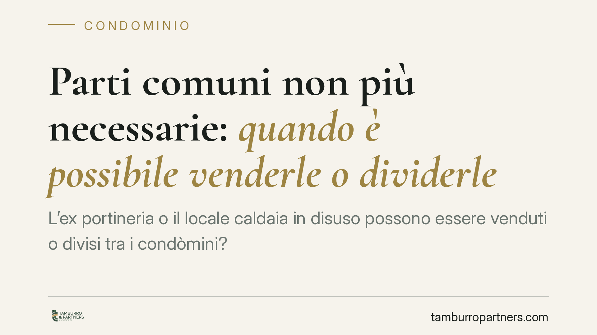

Parti comuni non più necessarie: quando è possibile venderle o dividerle
L'ex portineria o il locale caldaia in disuso possono essere venduti o divisi tra i condòmini? La questione ruota attorno al vincolo di destinazione delle parti comuni e ai presupposti per il suo venir meno. Un tema delicato, dove la giurisprudenza distingue tra semplice abbandono dell'uso e cessazione oggettiva della funzione. Analizziamo il quadro normativo e le cautele indispensabili.

Il tema: parti comuni e vincolo di destinazione
Molti edifici conservano locali un tempo essenziali e oggi inutilizzati: l'alloggio del portiere dopo la soppressione del servizio, l'ex lavatoio, il locale caldaia dismesso a seguito della conversione a impianti autonomi. Attorno a questi spazi si pone una domanda ricorrente: possono essere venduti a terzi o divisi tra i condòmini?
La risposta dipende dalla natura del vincolo che lega quei beni alla proprietà comune e dalle condizioni al ricorrere delle quali tale vincolo può considerarsi superato.
> Nota redazionale — citazione da verificare. In fase di lavorazione è emerso un riferimento a una pronuncia della Corte di Cassazione (indicata come sent. n. 6620/2026) sul punto. Il dato non risulta ad oggi verificabile su fonte primaria (CED Cassazione/Italgiure) e la datazione appare incongrua. Prima di ogni utilizzo della massima consigliamo la verifica diretta presso la banca dati ufficiale. Il presente contributo espone pertanto l'orientamento giurisprudenziale consolidato, non una singola decisione.
Inquadramento normativo
L'art. 1117 del Codice civile individua le parti comuni dell'edificio, presumendone la contitolarità in capo a tutti i condòmini. Si tratta di una comunione forzosa e funzionale: il bene è comune perché serve al godimento delle unità immobiliari e resta indivisibile finché assolve tale funzione strumentale. Questo regime si distingue dalla comunione ordinaria disciplinata dagli artt. 1100 e seguenti c.c., nella quale ciascun comproprietario può chiedere lo scioglimento ai sensi dell'art. 1111 c.c.
Il punto giuridicamente delicato è quando un bene possa transitare dalla comunione condominiale a quella ordinaria. Qui occorre prudenza. L'orientamento prevalente non ritiene sufficiente la semplice cessazione di fatto dell'uso — cioè il mero abbandono o disuso del locale — ma richiede il venir meno oggettivo e definitivo della destinazione a servizio comune. Un locale caldaia inattivo, ad esempio, potrebbe tornare utile; diverso è il caso in cui la funzione sia strutturalmente e irreversibilmente esaurita.
La distinzione non è formale. Da essa dipende la possibilità stessa di disporre del bene e la sussistenza del vincolo di indivisibilità proprio delle parti comuni.
Implicazioni pratiche
Una volta accertato — e questo è il nodo — che la destinazione comune è oggettivamente cessata, il regime del bene può assimilarsi alla comunione ordinaria. Ne derivano due possibili percorsi, da tenere distinti.
Vendita a terzi o a un condòmino. L'atto di disposizione di un bene comune richiede il consenso unanime di tutti i partecipanti. Non è materia di maggioranza assembleare: si tratta di alienazione di un diritto reale, che nessuna delibera può imporre al singolo dissenziente.
Divisione tra i condòmini. Qui opera l'art. 1111 c.c.: ciascun comproprietario può chiedere lo scioglimento della comunione, anche in via giudiziale in assenza di accordo. È uno strumento a disposizione del singolo, non subordinato al voto assembleare.
In entrambi i casi, la disposizione del bene incide sui millesimi e può rendere necessaria la revisione delle tabelle millesimali e, se il regolamento contiene previsioni sul locale, la sua modifica.
Resta centrale il profilo probatorio: chi invoca il superamento del vincolo deve dimostrare la cessazione effettiva e definitiva della destinazione comune, non il semplice non utilizzo temporaneo.
Cosa fare in concreto
- Accertate la reale natura del bene: verificate se il locale rientra tra le parti comuni ex art. 1117 c.c. e se la sua funzione strumentale è oggettivamente esaurita, non solo interrotta.
- Raccogliete la prova documentale: delibere di soppressione del servizio, dismissione degli impianti, stato dei luoghi, per dimostrare la definitività della cessazione d'uso.
- Distinguete il percorso: per la vendita è indispensabile l'unanimità; per la divisione può bastare l'iniziativa del singolo ex art. 1111 c.c.
- Aggiornate tabelle e regolamento: valutate l'impatto sui millesimi e le modifiche regolamentari conseguenti.
- È opportuna una verifica preliminare della fattibilità con un professionista, prima di assumere delibere o stipulare atti dispositivi.
La materia offre margini concreti di valorizzazione degli spazi inutilizzati, ma i presupposti vanno maneggiati con rigore: un accertamento affrettato del venir meno della destinazione espone a contenziosi tra condòmini e a rischi sulla validità degli atti.
---
Contributo informativo a cura di Tamburro & Partners Avvocati. Non costituisce parere legale.
Ogni condominio ha una storia a sé.
Se gestisci un'amministrazione e vuoi un confronto su una specifica questione condominiale, scrivi allo studio. Ti rispondiamo entro un giorno lavorativo.